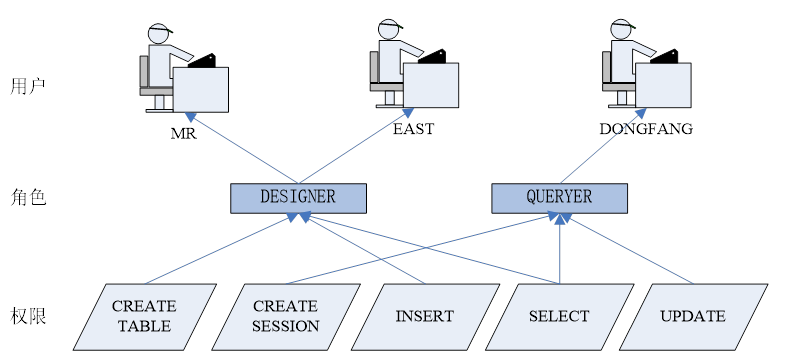
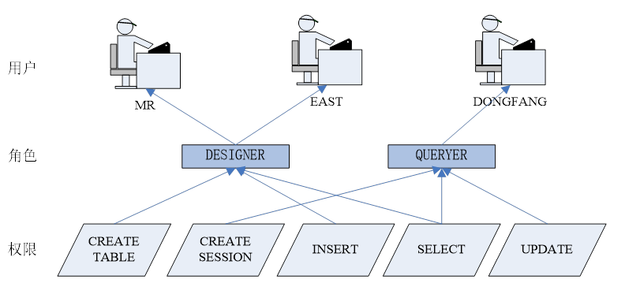

oracle用户、角色、权限管理
一、用户管理
在oracle中存在三类用户：sysdba、sysoper、普通用户。前两类用户为特权用户，拥有数据库的所有权限，特权用户的相关信息可以从动态性能视图v$pwfile_users中获得。
SQL> select * from v$pwfile_users;
USERNAME SYSDB SYSOP SYSAS
---------------------- ----- ----- -----
SYS TRUE TRUE FALSE
TEST1 TRUE FALSE FALSE
创建用户
只能由sys用户完成，或者拥有CREATE USER权限的用户。
创建用户语法如下：
create user user_name identified by pass_word
[or identified exeternally]
[or identified globally as ‘CN=user’]
[default tablespace tablespace_default]
[temporary tablespace tablespace_temp]
[quota [integer k[m]] [unlimited] ] on tablesapce_ specify1
[,quota [integer k[m]] [unlimited] ] on tablesapce_ specify2
[,…]…on tablespace_specifyn
[profiles profile_name]
[account lock or account unlock]
##
user_name：用户名，一般为字母数字型和“#”及“_”符号。
pass_word：用户口令，一般为字母数字型和“#”及“_”符号。
identified exeternally：表示用户名在操作系统下验证，这种情况下要求该用户必须与操作系统中所定义的用户名相同。
identified globally as ‘CN=user’：表示用户名由Oracle安全域中心服务器验证，CN名字表使用户的外部名。
[default tablespace tablespace_default]：表示该用户在创建数据对象时使用的默认表空间
[temporary tablespace tablespace_temp]：表示该用户所使用的临时表空间。
[quota [integer K[M]] [unlimited]] on
tablespace_specify1：表示该用户在指定表空间中允许占用的最大空间。 如果要禁止用户使用某个表空间，则可以通过quota关键字设置该表空间的使用限额为0
[profiles profile_name]：资源文件的名称。
[account lock or account unlock]：用户是否被加锁，默认情况下是不加锁的。
在创建完用户之后，需要注意以下几点：
- 如果建立用户时不指定DEFAULT TABLESPACE子句，Oracle会将SYSTEM表空间作为用户默认表空间。
- 如果建立用户时不能指定TEMPORARY TABLESPACE子句，Oracle会将数据库默认临时表空间作为用户的临时表空间。
- 初始建立的用户没有任何权限，所以为了是用户可以连接到数据库，必须授权其CREATE SESSION权限
- 如果建立用户时没有为表空间指定QUOTA子句，那么用户在特定表空间上的配额为0，用户将不能在相应的表空间上建立数据对象。
- 初始建立的用户没有任何权限，不能执行任何数据库操作。
修改用户属性
能够使用alter user来调整账户上的每个属性
1、更改口令
alter user scott identified by lion;
2、更改默认表空间和临时表空间
alter user scott default tablespace store_data temporary tablespace temp;
3、更改配额
alter user scott quota unlimited on store_data,quota 0 on users;
4、更改配置文件
alter user scott profile prod_profile;
5、强制更改口令
alter user scott password expire;
6、锁定用户
alter user scott account lock;
7、解锁用用户
alter user scott account unlock;
8、删除用户
drop user scott;
但是需要注意:此时用户不能正在连接着,并且该用户不能有对象
9、强制删除的语法:
drop user scott cascade;
删除用户
删除用户通过DROP USER语句完成的，删除用户后，Oracle会从数据字典中删除用户、方案及其所有对象方案。
语法如下：
drop user user_name[cascade]
##
user_name：要删除的用户名。
cascade：级联删除选项，如果用户包含数据库对象，则必须加CASCADE选项，此时连同该用户所拥有的对象一起删除。
与用户有关的数据字典
dba_users
二、权限管理
根据系统管理方式的不同，在Oracle数据库中将权限分为两大类：系统权限和对象向权限。
系统权限是在系统级对数据库进行存取和使用的机制，比如，用户是否能够连接到数据库系统（SESSION权限），执行系统级的DDL语句（如CREAT、ALTER、和DROP）等。
对象权限是指某一个用户对其他用户的表、视图、序列、存储过程、函数、包等的操作权限。不同类型的对象具有不同的对象权限，对于某些模式对象，比如簇、索引、触发器、数据库链接等没有相应的实体权限，这些权限由系统权限进行管理。
常用的系统权限
系统权限 | 说明 |
Create cluster | 在自己的模式中创建簇的权限 |
Create procedure | 在自己的模式中创建存储函数、存储过程、程序包的权限 |
Create session | 登录数据库的权限 |
Create table | 在自己的模式中创建表的权限 |
Create tablespace | 在自己的模式中创建表空间的权限 |
Unlimited tablespace | 在任意表空间都有无限空间配额的权限 |
Create trigger | 在自己的模式中创建触发器的权限 |
Create user | 创建用户的权限 |
Create view | 在自己的模式中创建视图的权限 |
常用的对象权限
对象权限 | 说明 |
ALTER | 修改表和序列的权限 |
SELECT | 对数据库对象中的数据的查询权限 |
INSERT | 对数据库对象中的数据插入的权限 |
DELETE | 对数据库对象中的数据删除的权限 |
UPDATE | 对数据库对象中的数据更新的权限 |
REFERENCES | 可以与一个表建立关联关系的权限，在授予权限时可以指定列，也可以不指定 |
EXECUTE | 执行存储函数、存储过程和程序包的权限 |
RENAME | 重命名数据库对象的权限 |
与权限相关的数据字典
权限类型 | 数据字典视图 | 说明 |
系统权限 | system_privilege_map | 当前数据库中已经定义的所有系统权限 |
dba_sys_prvis | 任何用户所具有的系统权限(sys用户) | |
user_sys_privs | 用户自己所拥有的系统权限 | |
session_privs | 一个用户在当前会话中所具有的权限 | |
对象权限 | table_privilege_map | 当前数据库中已经定义的所有对象权限 |
dba_tab_privs | 任何用户所具有的对象权限 | |
dba_col_privs | 任何用户在列上所具有的权限 | |
user_tab_privs | 用户自己所拥有的对象权限 | |
user_col_privs | 用户自己所拥有的列的权限 |
为用户授予系统权限的语法格式如下：
GRANT 权限，… TO user，… [WITH ADMIN OPTION];
为用户授予对象权限的语法格式如下：
GRANT 权限(列名),… ON 对象 TO user,… [WITH ADMIN OPTION]
其中WITH ADMIN OPTION子句使得权限的获得者可以将权限再分配给其他用户。
回收用户系统权限的语法格式如下：
REVOKE 权限，… FROM user,…
回收用户对象权限的语法格式如下：
REVOKE 权限,… ON 对象 FROM user,…;
当回收所有权限时，可以使用REVOKE ALL
三、角色管理
角色是一个独立的数据库实体，它包括一组权限。也就是说，角色是包括一个或者多个权限的集合，它并不被哪个用户所拥有。角色可以被授予任何用户，也可以从用户中将角色收回。
使用角色可以简化权限的管理，可以仅用一条语句就能从用户那里授予或回收权限，而不必对用户一一授权。使用角色还可以实现权限的动态管理，比如，随着应用的变化可以增加或者减少角色的权限，这样通过改变角色的权限，就实现了改变多个用户的权限。
角色、用户及权限是一组关系密切的对象，既然角色是一组权限的集合，那么，它只有被授予某个用户才能有意义，可以用如图所示的图形来帮助我们理解角色、用户及权限的关系。
作为Oracle的数据库管理员，在创建和管理用户时，必须理解Oracle的权限与角色的关系。在复杂的大型应用系统中，要求对应用系统功能进行分类，从而形成角色的雏形，再使用CREATE ROLE语句将其创建成为角色；最后根据用户工作的分工，将不同的角色（包括系统预定义的角色）授予各类用户。如果应用系统的规模很小，用户数也不多，则可以直接将应用的权限授予用户，即使是这样，用户也必须对Oracle系统的预定义角色有所了解，因为一个用户至少被授予一个以上的预定义角色时才能使用ORACLE系统资源。
另外，在创建角色时，可以为角色设置应用安全性。角色的安全性通过为角色设置口令进行保护，必须提供正确的口令才允许修改或设置角色。
 
oracle预定义角色
select * from dba_roles;

角色CONNECT，RESOURCE及DBA主要用于数据库管理，这3个角色之间相互没有包含关系（有些系统权限可能有重叠）。数据库管理员需要分别授予CONNECT，RESOURCE和DBA角色。对于一般的数据库开发人员，则需要授予CONNECT，RESOURCE角色。
角色名称 | 所包含权限 |
CONNECT | CREATE SESSION |
RESOURCE | CREATE CLUSTER, CREATE INDEXTYPE, CREATE OPERATOR, CREATE PROCEDURE, CREATE SEQUENCE, CREATE TABLE, CREATE TRIGGER, CREATE TYPE...... |
DBA | 可通过DBA_SYS_PRIVS数据字典查看，拥有所有权限，不受限制 |
角色IMP_FULL_DATABASE和EXP_FULL_DATABASE分别用于操作数据库的导入或导出工具，如，操作数据库工具EXPDP，IMPDP，或者系统的EXP，IMP。在使用这些工具进行整个数据库的到导出与导入工作时，需要具备这两个角色。
角色名称 | 所包含权限 |
EXP_FULL_DATABASE | READ ANY FILE GROUP EXECUTE ANY PROCEDURE RESUMABLE SELECT ANY TABLE EXECUTE ANY TYPE CREATE SESSION ... |
IMP_FULL_DATABASE | BECOME USER ALTER USER CREATE ANY SYNONYM EXECUTE ANY PROCEDURE DROP ANY TRIGGER GRANT ANY PRIVILEGE CREATE ANY MATERIALIZED VIEW DROP ANY LIBRARY ... |
1、 创建角色：
CREATE ROLE role_name;
2、 删除角色：
DROP ROLE role_name;
3、 向角色授予权限
授予系统权限：
GRANT 权限，… TO role_name [WITH ADMIN OPTION];
授予对象权限：
GRANT 权限，… ON 对象 TO role_name；
4、向角色收回权限
REVOKE ………… FROM………
5、 角色的分配：
GRANT role_name TO user1；
6、 角色的回收
REVOKE role_name FROM user;
与角色有关的数据字典
数据字典名 | 说明 |
dba_roles | 数据库中的所有角色 |
dba_role_privs | 所有被授予用户或另一角色的角色 |
user_role_privs | 所有被授予当前用户的角色 |
role_role_privs | 一个角色中包含的其它角色 |
role_sys_privs | 一个角色中包含的系统权限 |
role_tab_privs | 一个角色中包含的对象权限 |
session_roles | 当前会话中所使用的角色 |
user_role_privs和role_role_privs 都是dba_role_privs的子集.
dba_role_privs的grantee字段包括用户名与角色名.
user_role_privs的username字段包括操作用户的用户名.
role_role_privs的role字段只是角色名.
用户、角色、权限三者关联的字典
1 三者的字典表
1） 用户
select * from dba_users;
2）角色
select * from dba_roles;
3）权限
分为系统权限与对象权限：
select * from system_privilege_map;
select * from table_privilege_map;
2 三者之间关系的字典表
这类关系字典表的表名后缀都包含"_privs"
1） 用户与角色
用户拥有的角色：
select * from dba_role_privs;
select * from user_role_privs;
select * from role_role_privs;
user_role_privs和role_role_privs 都是dba_role_privs的子集.
dba_role_privs的grantee字段包括用户名与角色名.
user_role_privs的username字段包括操作用户的用户名.
role_role_privs的role字段只是角色名.
2）用户与权限
用户拥有的系统权限：
select * from dba_sys_privs;
用户拥有的对象权限：
select * from dba_tab_privs;
select * from dba_col_privs;
3）角色与权限
查询授出去的对象权限（通常是属主自己查）
select * from role_sys_privs;
select * from role_tab_privs;
3 其他
查询授出去的对象权限（通常是属主自己查）
select * from user_tab_privs_made;
select * from all_tab_privs_made;
用户拥有的对象权限
select * from user_tab_privs_recd;
select * from all_tab_privs_recd;
用户分配出去的列的对象权限
select * from user_col_privs_made;
select * from all_col_privs_made;
用户拥有的关于列的对象权限
select * from user_col_privs_recd;
select * from all_col_privs_recd;